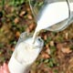
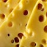
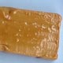
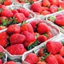
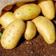
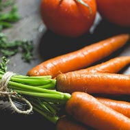
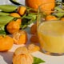

Butiken
Välkommen till butiken
Varorna är skördade lokalt på gården. Brunosten är en norsk klassiker som tillverkas med getmjölk. Mjölken är pastöriserad men ej homogeniserad med fetthalt runt 5%. Potatisen och morötterna förvaras i jordkällare. Bönorna som används i kaffet är från Colombia och ej från gården.
Varor

Mjölk
10,-/liter

Ost
12,-/hg

Brunost
20,-/hg

Jordgubbar
30,-/låda

Potatis
29,-/kg

Morötter
29,-/kg

Saft
50,-/liter
Kaffe
30,-/kopp
Volontär i butiken
Det är volontärerna som sköter driften av butiken, typiska uppgifter under en dag är skörd och transport av grödor till butiken, serva kunder och alltid se till så att varorna är färska. Läs intervju med volontären Helena här.